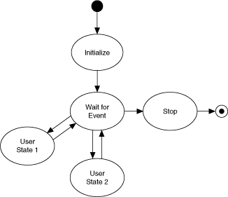
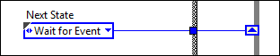
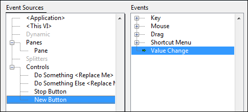
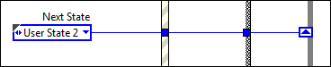
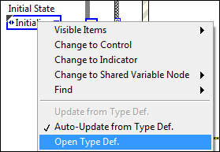
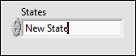
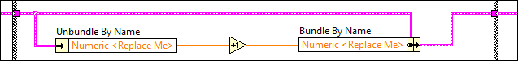
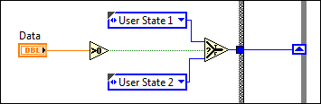
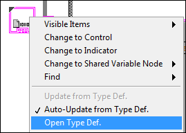
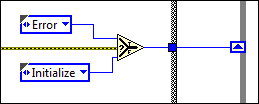

Simple State Machine
The Simple State Machine template facilitates defining the execution sequence for sections of code. This particular implementation often is referred to as a Moore machine, which determines the next state based on decisions made in the current state. The design of this template makes it easy to insert new sections of code, remove sections of code, or change the order in which sections execute – all without making major modifications to the structure of the application.
System Requirements
LabVIEW Base, Full, or Professional Development System
Use Cases
This template is suitable for applications that can be described as a combination of:
- States
- Decision-making logic that determines when to move to a particular state
For example, the following applications can benefit from the state machine pattern:
- Single-page or tabbed dialog boxes. Each tab of the dialog box corresponds to a state. A user initiates state transitions by clicking a particular tab. For each tab, any actions the user can perform are included in the state.
- An automated teller machine (ATM). The states in this application might include waiting for user input, checking the requested amount against the account balance, dispensing the money, printing the receipt, and so on.
- An application that takes one measurement, logs it to disk, and then waits for another user action. The states in this application might include waiting for user input, performing the measurement, logging the data, displaying the data, and so on.
Overview

Notes:
- Each state in the diagram above corresponds to a subdiagram of the Case structure in Main.vi. Each state:
- Performs some action
- Tells the state machine what the next state is by passing an instruction to a shift register on the While Loop.
- After initialization, the state machine transitions to the Wait for Event state. This state contains an Event structure that waits for front panel changes. When a user clicks a button, LabVIEW recognizes the event and switches to the appropriate subdiagram of the Event structure. This subdiagram initiates a transition to the appropriate state.
- Each state has access to a cluster of data. The data types in this cluster are defined in Data.ctl.
- The valid states are listed in State.ctl, which is a typedef. Using a typedef for state transitions restricts the transitions you can use, reducing the chances that the state machine gets into an unrecognized state.
- Only the Stop state can stop the application. This design prevents accidental and partial shutdowns by guaranteeing that:
- Shutdown code runs only when the user wants to stop the application.
- Shutdown code always runs to completion.
- Only one state executes at a time, and the single While Loop means all tasks execute at a single rate. If you need multi-rate or parallel tasks, consider the Queued Message Handler or Actor Framework templates, available from the Create Project dialog box.
- The Wait for Event state is the only one that recognizes user input. The state machine must be in this state for any user input to be accepted.
Running This Template
- In the Project Explorer window, open and run Main.vi.
- Click the front panel controls to display different pop-up dialog boxes.
Modifying this Template
Determining Your Needs
Before you customize this template, ask yourself the following questions:
- What states does the application consist of? The answer to this question determines the states you add.
- For each state, what should the next state be? The answer to this question determines the value of the Next State enum that each state sends to the shift register on the While Loop.
A single state can conditionally transfer to multiple states. An example is the Wait for Event state in the template, which transitions to a state based on user input.
- What kind of data will each state need access to? The answer to this question determines what data types you add to Data.ctl.
- What are some errors that could occur, and how should the application respond to these errors? The answers to these questions determine the amount of error handling you need.
Adding Initialization Code
Complete the following steps to add code that initializes your application:
- Locate the Initialize subdiagram of the Case structure.
- Add code that initializes your application. For example, you may want to open a file on disk for logging, initialize the data in Data.ctl to specific values, and so on.
- Decide what state the application should transition to. By default, the Initialize state transitions to the Wait for Event state:

Depending on the needs of your application, you can modify this code to transition to a different state.
Adding a Control that Initiates a State Transition
- Add a control to the front panel.
- Locate the Wait for Event subdiagram of the Case structure.
- Add an event case to the Event structure.
- Configure the event to trigger when the value of this new control changes. For example:

- Click OK. LabVIEW creates a subdiagram in the Event structure.
- Drag the block diagram terminal for the new control inside this subdiagram.
- Decide what state you want to transition to as a result of the user interacting with this control and wire an enum with this state's value to the Next State output tunnel:

If the state you want to transition to does not exist, add it.
Adding a State
Complete the following steps to add a state:
- Update States.ctl, the typedef that contains the valid states:
- Locate an enum of States.ctl and open the typedef:

LabVIEW displays the Control Editor window.
- Add a space for the new state to the States enum.
- Enter the name of the new state. For example:

- Click outside the control to add the name to the list of states.
- Select File»Apply Changes.
- Add the state to the state machine itself:
- Add a subdiagram to the Case structure in Main.vi.
- Add code that the state will execute. As you do this, pay attention to the following guidelines:
- Use the Unbundle by Name and Bundle by Name functions to access and modify state data:

- Wire the error terminals of your functions to the error shift register.
- Wire a FALSE constant to the Boolean output tunnel. Only the Stop state can stop the loop.
- Each state must specify a transition to another state. Wire the value of the next state to the Next State output tunnel. You can wire this terminal directly, or you can implement conditional logic. The following figure shows an example of such logic:

In the code shown above, if Data is greater than 0, User State 1 is the next state. Otherwise, User State 2 is the next state. For more advanced conditional logic, use a Case structure.
- Ensure the application contains a transition to the new state.
Modifying the Data Types that States can Access
Complete the following steps to modify the data types that states have access to:
- Locate an enum of Data.ctl and open the typedef:

LabVIEW displays the Control Editor window.
- Customize the control to your needs.
- Select File»Apply Changes.
Adding Shutdown Code
Add shutdown code to the Stop subdiagram of the Case structure. Because the this subdiagram is the only one that can stop the application, any code you add to this subdiagram is guaranteed to execute before the application stops and not at any other time. This design prevents accidental and partial shutdowns.
Shutdown code commonly accomplishes the following tasks:
- Frees memory by closing any open references.
- Flushes any buffers in use.
- Writes safe values to hardware input channels
Adding Error Handling
By default, this template stops if any function returns an error on its error out terminal. You might want to ignore specific errors or implement some more intelligent error handling. Complete the following steps to add error handling:
- Add an Error state.
- In the Error state, create the code that handles errors in the ways you want.
- In all other states, transition to the Error state whenever an error occurs. For example:

Removing the User Interface
If your application does not need a user interface, complete the following steps to remove it:
- Delete all front panel controls and indicators.
- Delete the Wait for Event subdiagram from the Case structure in Main.vi.
- The previous step removes the Default subdiagram, which is the subdiagram that executes when the Case selector is told to execute to an unknown subdiagram. For error-handling purposes, make another subdiagram the default.
- Fix any broken wires.
You also can remove Wait for Event from State.ctl. This step ensures that your state machine can never attempt to transition to the state you just removed. However, before you do this, make a note of the enums in your application that call this state. After you save the updated State.ctl, these enums will change. Ensure the new, changed state is what you want.
Related Information
Refer to the LabVIEW Help, available by selecting Help»LabVIEW Help from LabVIEW, for information about LabVIEW concepts or objects used in this template. You also can use the Context Help window to learn basic information about LabVIEW objects as you move the cursor over each object. To display the Context Help window in LabVIEW, select Help»Show Context Help.
Refer to the Finite Measurement sample project, available from the Create Project dialog box, for an example of adapting this template to a measurement application.
Refer to ni.com for a developer walkthrough of this template.
Legal Information
Copyright
© 2014 National Instruments. All rights reserved.
Under the copyright laws, this publication may not be reproduced or transmitted in any form, electronic or mechanical, including photocopying, recording, storing in an information retrieval system, or translating, in whole or in part, without the prior written consent of National Instruments Corporation.
National Instruments respects the intellectual property of others, and we ask our users to do the same. NI software is protected by copyright and other intellectual property laws. Where NI software may be used to reproduce software or other materials belonging to others, you may use NI software only to reproduce materials that you may reproduce in accordance with the terms of any applicable license or other legal restriction.
End-User License Agreements and Third-Party Legal Notices
You can find end-user license agreements (EULAs) and third-party legal notices in the following locations:
- Notices are located in the <National Instruments>\_Legal Information and <National Instruments> directories.
- EULAs are located in the <National Instruments>\Shared\MDF\Legal\license directory.
- Review <National Instruments>\_Legal Information.txt for information on including legal information in installers built with NI products.
U.S. Government Restricted Rights
If you are an agency, department, or other entity of the United States Government ("Government"), the use, duplication, reproduction, release, modification, disclosure or transfer of the technical data included in this manual is governed by the Restricted Rights provisions under Federal Acquisition Regulation 52.227-14 for civilian agencies and Defense Federal Acquisition Regulation Supplement Section 252.227-7014 for military agencies.
IVI Foundation Copyright Notice
Content from the IVI specifications reproduced with permission from the IVI Foundation.
The IVI Foundation and its member companies make no warranty of any kind with regard to this material, including, but not limited to, the implied warranties of merchantability and fitness for a particular purpose. The IVI Foundation and its member companies shall not be liable for errors contained herein or for incidental or consequential damages in connection with the furnishing, performance, or use of this material.
Trademarks
Refer to the NI Trademarks and Logo Guidelines at ni.com/trademarks for more information on National Instruments trademarks.
Other product and company names mentioned herein are trademarks or trade names of their respective companies.
Patents
For patents covering the National Instruments products/technology, refer to the appropriate location: Help»Patents in your software, the patents.txt file on your media, or the National Instruments Patent Notice at ni.com/patents.